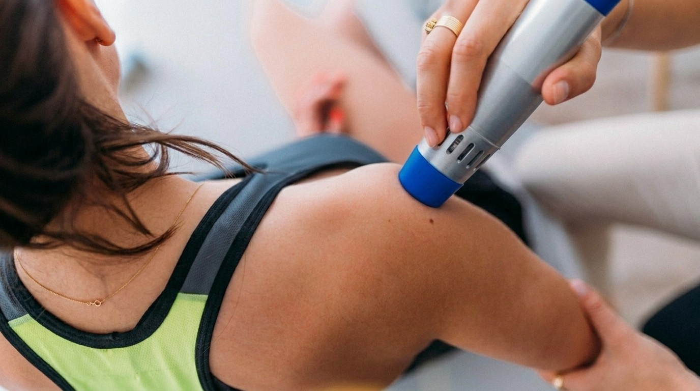
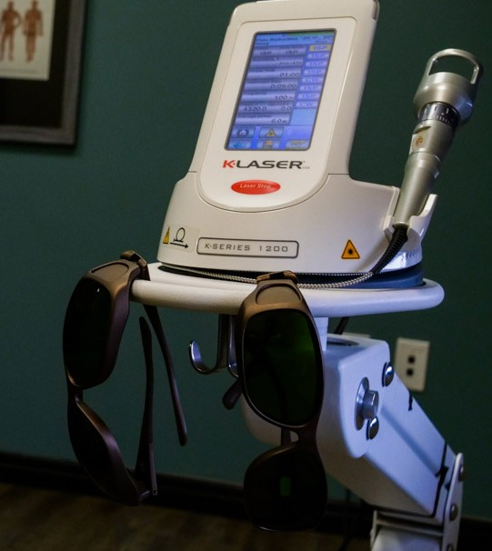

You iced it. You stretched it. You finished the PT. You took the ibuprofen until your stomach said stop. And it's still there every morning when you stand up — that same dull ache in the same exact spot. There's a reason it isn't healing on its own.
You went to the doctor. Maybe the orthopedist too. You got the anti-inflammatories, the ice protocol, the home exercises. Maybe a cortisone shot. And for a while, things felt better — until they didn't. Now it's been months. Maybe years. And you've started to wonder if this is just your life now.
Here's what almost no one explains: your body's repair process actually stalls. When tissue stays inflamed long enough, the cells that should be rebuilding it run out of energy. The mitochondria — the little power plants inside every cell — slow down. Without that energy, repair never finishes. The injury stays half-healed, and the pain stays put.
If your cells don't have the energy to heal, no amount of rest is going to finish the job.
These aren't textbook symptoms. They're what your day actually looks like.
Once you understand the problem is stalled-out cells, the answer changes. We're not blocking pain signals. We're not numbing the area. We're using a medical-grade K-Laser K-Series 1200 to deliver specific wavelengths of red and near-infrared light deep into the tissue that's been stuck.
Those photons get absorbed by the mitochondria in your cells. ATP production climbs. Inflammation comes down. Blood flow surges into the injury, carrying oxygen and the raw materials your body needs to actually finish the repair it started months ago.
You feel a gentle warmth. That's it. No needles, no medications, no recovery time. Sessions take 5 to 15 minutes — you walk out and get on with your day. Most patients start noticing a difference within the first few visits, and a full course is usually built into your care plan based on how long the area has been hurting.
Schedule a Consultation
No long sales pitch — just what people actually mention when they tell their friends.
Tell us where it hurts and how long it's been hurting. We'll be straight with you about whether cold laser is the right tool for your case — and what other options might work better if it isn't.